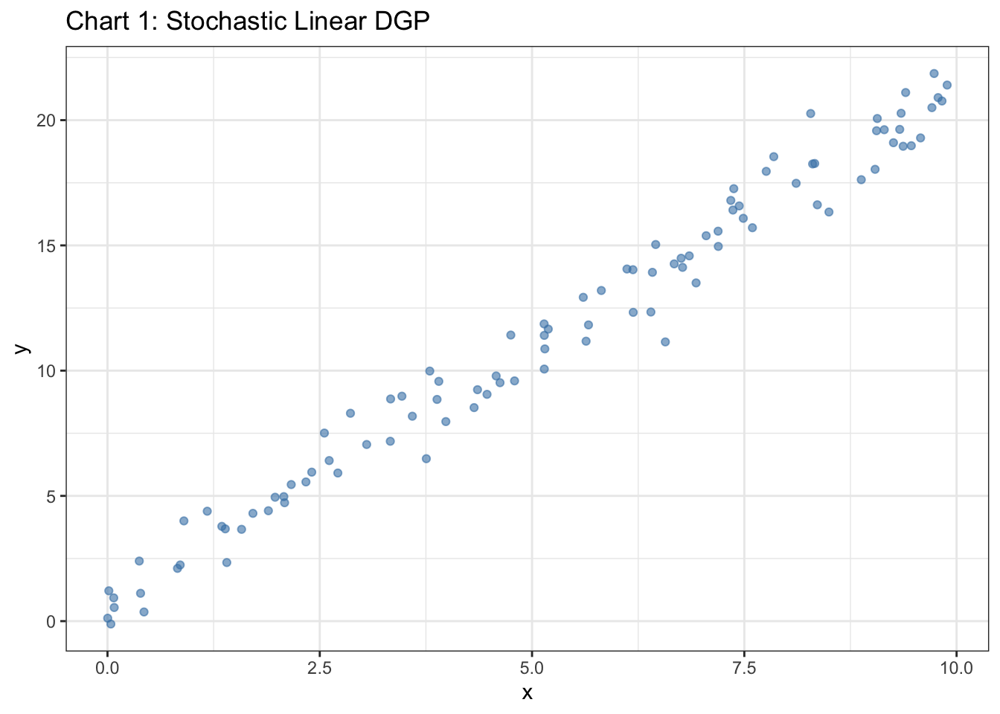
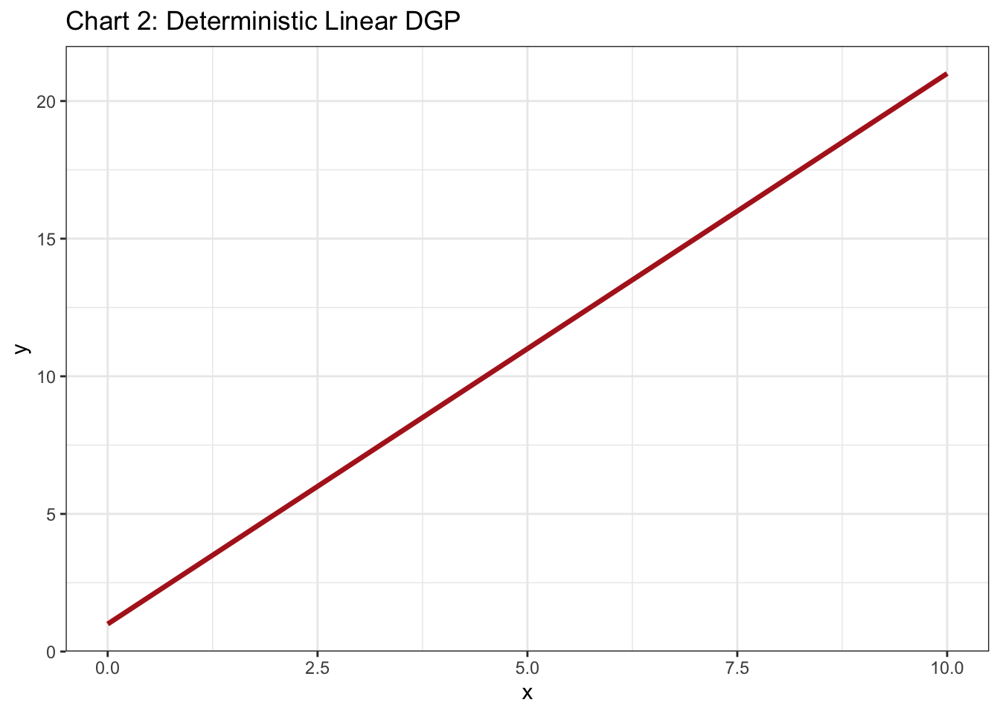

Understand fundamental data theory and data generation processes
Distinguish between Breiman’s “two cultures” of statistical modeling
Explore Daoud and Dubhashi’s “three cultures” framework
Differentiate between big data, small data, found data, and made data
2.2 1.1 Data Generation Processes and Theory
2.2.1 What is a Data Generation Process (DGP)?
A Data Generation Process (DGP) refers to the underlying mechanism or set of rules by which data are produced. According to Jepusto (2025), a DGP is essentially a “recipe” for producing data, specifying how each value in a dataset is determined—whether by random chance, deterministic rules, or a mix of both. Understanding the DGP is crucial for:
Modeling: Selecting appropriate statistical models depends on knowing the underlying distribution and process that generated the data.
Simulation: Simulating realistic data for testing methods or teaching requires specifying a DGP.
Inference: Causal and statistical inference rely on assumptions about how data are produced.
2.2.1.1 Why is DGP Important in Data Science Analytics?
Distributional Assumptions: Many models (e.g., regression, classification) assume data follow certain distributions. Knowing the DGP ensures these assumptions are valid.
Simulation Studies: When evaluating methods, researchers simulate data from a known DGP to assess performance under controlled conditions.
Bias and Variance: The DGP determines the inherent variability and potential biases in data, affecting model evaluation and interpretation.
2.2.1.2 Example: Simulating DGPs
Below are two DGPs—one linear (stochastic) and one deterministic. The charts illustrate how data generated under each process look different.
Show the code
library(tidyverse)# Linear (stochastic) DGPset.seed(42)linear_data <-tibble(x =runif(100, 0, 10),y =1+2* x +rnorm(100, 0, 1))# Deterministic DGPdeterministic_data <-tibble(x =seq(0, 10, length.out =100),y =1+2* x)# Chart 1: Linear (Stochastic) DGPggplot(linear_data, aes(x = x, y = y)) +geom_point(alpha =0.6, color ="steelblue") +labs(title ="Chart 1: Stochastic Linear DGP",x ="x", y ="y") +theme_bw()

Show the code
# Chart 2: Deterministic DGPggplot(deterministic_data, aes(x = x, y = y)) +geom_line(color ="firebrick", size =1.2) +labs(title ="Chart 2: Deterministic Linear DGP",x ="x", y ="y") +theme_bw()

Explanation:
Chart 1 shows data with random noise, typical of a stochastic process.
Chart 2 shows a perfect line, as every y is exactly determined by x.
2.2.1.3 Stochastic vs. Deterministic Data Generation
Stochastic DGP: Includes randomness; outcomes vary even with the same inputs. Example: Rolling a die, measurement error in experiments.
Deterministic DGP: No randomness; outcomes are fully determined by inputs. Example: Calculating area of a circle given radius.
Key Differences:
Stochastic processes model uncertainty and variability in real-world data.
Deterministic processes are rare in observational data but common in simulations or controlled settings.
2.3 1.2 The Two Cultures of Statistical Modeling
Breiman (2001) described two main approaches:
2.3.1 Data Modeling Culture (DMC)
Assumes data are generated by a specific stochastic model (e.g., linear regression, logistic regression).
Focuses on understanding the process, estimating parameters, and testing hypotheses.
Example: Modeling the effect of education on income using a regression model with specified error terms.
2.3.2 Algorithmic Modeling Culture (AMC)
Treats the data mechanism as unknown; focuses on predictive accuracy.
Uses flexible algorithms (e.g., random forests, neural networks) that may not provide interpretable parameters.
Example: Using a random forest to predict customer churn without specifying a generative model.
2.3.2.1 Four Key Characteristics
DMC:
Interpretability: Models are designed to be interpretable and explainable.
Inference: Focus on hypothesis testing and parameter estimation.
Predictive Accuracy: Main goal is to minimize prediction error.
Flexibility: Can model complex, nonlinear relationships.
Fewer Assumptions: Makes minimal assumptions about the data.
Black-box Nature: Often less interpretable.
2.4 1.3 Big Data and the Five V’s
Traditional big data is characterized by three V’s:
Volume: The amount of data.
Velocity: The speed at which data are generated and processed.
Variety: The diversity of data types and sources.
Burt Monroe (2012) adds two more:
Vinculation: The degree to which data points are linked or related (e.g., social network data).
Validity: The accuracy and trustworthiness of the data for the intended purpose.
Summary Table: The Five V’s of Big Data
V
Description
Example
Volume
Amount of data
Terabytes of tweets
Velocity
Speed of data creation/processing
Real-time sensor data
Variety
Different types/sources
Text, images, logs
Vinculation
Connectedness/linkages among data points
Social network graphs
Validity
Data quality and relevance
Verified medical records
2.5 1.4 Found Data vs. Made Data
2.5.1 Found Data
Definition: Data collected for purposes other than the current research question; often passively generated.
Examples: Social media posts, transaction logs, government administrative data, web scraping, sensor data.
Strengths: Large volume, real-world behavior, cost-effective.
Limitations: May lack key variables, less control over data quality, potential for bias.
2.5.2 Made Data
Definition: Data collected specifically for research, often via experiments or surveys with a designed protocol.
Examples: Randomized controlled trials, survey data (e.g., TEDS), laboratory experiments.
Strengths: High control, tailored to research questions, better for causal inference.
Limitations: Costly, time-consuming, may be limited in scale.
2.5.3 Emphasizing Design in Small Data
Small data projects often require careful design: sampling, measurement, and data collection protocols are critical.
Good design ensures validity, reliability, and interpretability—especially important when data volume is low.
2.5.4 Comparison Table: Found Data vs. Made Data
Aspect
Found Data
Made Data
Origin
Passive/byproduct of other processes
Purposeful collection for research
Control
Low
High
Volume
Often large
Typically small/moderate
Variables
May lack key variables
Tailored to research needs
Quality
Variable; may lack documentation
Controlled; well-documented
Bias
Potentially high
Can be minimized by design
Example
Social media, government records
Surveys, experiments
2.6 Examples
Found Data:
Web data
Wikipedia tables
US government open portal API
Media Cloud (news stories)
Made Data:
American National Election Studies (ANES) survey
Randomized controlled trial survey
2.7 Summary
Understanding the DGP is foundational for all data science analytics, affecting model choice, simulation, and inference.
The distinction between stochastic and deterministic processes underlies much of statistical modeling.
The two cultures (DMC and AMC) highlight the tradeoff between interpretability and predictive power.
Big data is more than just size; vinculation and validity are essential for meaningful analysis.
Found data and made data each have strengths and limitations—design is especially critical in small, made data projects.
2.8 Hands-on Exercise 1: Data Generation Process Analysis
Challenge: Students identify three datasets without knowing their generation process and must:
Identify potential DGPs through exploratory analysis
Classify which “culture” approach would be most appropriate
Determine if the data represents big data, small data, found data, or made data
Justify their analytical strategy choice
2.9 Suggestions:
US Census data
Taiwan Election and Democratization Study (TEDS)
US government information (https://www.govinfo.gov/)
Taiwan Open Parliament API (https://www.ly.gov.tw/Pages/List.aspx?nodeid=153)
Media Cloud (https://www.mediacloud.org/)
2.9.1 References
Breiman, Leo. 2001. “Statistical Modeling: The Two Cultures.” Statistical Science 16(3): 199-231.
Chen, C.L. Philip, and Chun-Yang Zhang. 2014. “Data-Intensive Applications, Challenges, Techniques and Technologies: A Survey on Big Data.” Information Sciences 275: 314-347.
Daoud, Adel, and Devdatt Dubhashi. 2020. “Statistical Modeling: The Three Cultures.” Harvard Data Science Review 2(1). https://doi.org/10.1162/99608f92.6b3ba01e.
Gelman, Andrew. 2020. “Reflections on Breiman’s Two Cultures of Statistical Modeling.” Observational Studies 6(1): 15-24.
Hand, David J. 2019. “Aspects of Data Ethics in a Changing World: Where Are We Now?” Big Data 6(3): 176-190.
Jepusto, James. 2025. “Chapter 6: Data-Generating Processes.” In Designing Monte Carlo Simulations in R. https://jepusto.github.io/Designing-Simulations-in-R/data-generating-processes.html.
Kass, Robert E. 2021. “The Two Cultures: Statistics and Machine Learning in Science.” Harvard Data Science Review 3(1). https://doi.org/10.1162/99608f92.ba20f892.
Lazer, David, Ryan Kennedy, Gary King, and Alessandro Vespignani. 2014. “The Parable of Google Flu: Traps in Big Data Analysis.” Science 343(6176): 1203-1205.
Lindstrom, Peter. 2020. “Small Data, Big Impact: How to Get More from Less Data.” MIT Technology Review, March 15.
Moya, Cristobal. 2009. “Chapter 3: Data Generation Processes.” In Inferential Statistics and Causal Inference. https://bookdown.org/cristobalmoya/iscs_materials/data-generation.html.
Pearl, Judea. 2009. Causality: Models, Reasoning, and Inference. 2nd ed. Cambridge: Cambridge University Press.
Salganik, Matthew J. 2018. Bit by Bit: Social Research in the Digital Age. Princeton: Princeton University Press.
Source Code
---title: "Chapter 1: Data Science Theory and Fundamentals"---## Learning Objectives- Understand fundamental data theory and data generation processes- Distinguish between Breiman's "two cultures" of statistical modeling- Explore Daoud and Dubhashi's "three cultures" framework- Differentiate between big data, small data, found data, and made data## 1.1 Data Generation Processes and Theory### What is a Data Generation Process (DGP)?A **Data Generation Process (DGP)** refers to the underlying mechanism or set of rules by which data are produced. According to Jepusto (2025), a DGP is essentially a "recipe" for producing data, specifying how each value in a dataset is determined—whether by random chance, deterministic rules, or a mix of both. Understanding the DGP is crucial for:- **Modeling:** Selecting appropriate statistical models depends on knowing the underlying distribution and process that generated the data.- **Simulation:** Simulating realistic data for testing methods or teaching requires specifying a DGP.- **Inference:** Causal and statistical inference rely on assumptions about how data are produced.#### Why is DGP Important in Data Science Analytics?- **Distributional Assumptions:** Many models (e.g., regression, classification) assume data follow certain distributions. Knowing the DGP ensures these assumptions are valid.- **Simulation Studies:** When evaluating methods, researchers simulate data from a known DGP to assess performance under controlled conditions.- **Bias and Variance:** The DGP determines the inherent variability and potential biases in data, affecting model evaluation and interpretation.#### Example: Simulating DGPsBelow are two DGPs—one linear (stochastic) and one deterministic. The charts illustrate how data generated under each process look different.```{r}#| message: false#| warning: falselibrary(tidyverse)# Linear (stochastic) DGPset.seed(42)linear_data <-tibble(x =runif(100, 0, 10),y =1+2* x +rnorm(100, 0, 1))# Deterministic DGPdeterministic_data <-tibble(x =seq(0, 10, length.out =100),y =1+2* x)# Chart 1: Linear (Stochastic) DGPggplot(linear_data, aes(x = x, y = y)) +geom_point(alpha =0.6, color ="steelblue") +labs(title ="Chart 1: Stochastic Linear DGP",x ="x", y ="y") +theme_bw()# Chart 2: Deterministic DGPggplot(deterministic_data, aes(x = x, y = y)) +geom_line(color ="firebrick", size =1.2) +labs(title ="Chart 2: Deterministic Linear DGP",x ="x", y ="y") +theme_bw()```**Explanation:** - *Chart 1* shows data with random noise, typical of a stochastic process.- *Chart 2* shows a perfect line, as every y is exactly determined by x.#### Stochastic vs. Deterministic Data Generation- **Stochastic DGP:** Includes randomness; outcomes vary even with the same inputs. Example: Rolling a die, measurement error in experiments.- **Deterministic DGP:** No randomness; outcomes are fully determined by inputs. Example: Calculating area of a circle given radius.**Key Differences:**- Stochastic processes model uncertainty and variability in real-world data.- Deterministic processes are rare in observational data but common in simulations or controlled settings.## 1.2 The Two Cultures of Statistical ModelingBreiman (2001) described two main approaches:### Data Modeling Culture (DMC)- Assumes data are generated by a specific stochastic model (e.g., linear regression, logistic regression).- Focuses on understanding the process, estimating parameters, and testing hypotheses.- Example: Modeling the effect of education on income using a regression model with specified error terms.### Algorithmic Modeling Culture (AMC)- Treats the data mechanism as unknown; focuses on predictive accuracy.- Uses flexible algorithms (e.g., random forests, neural networks) that may not provide interpretable parameters.- Example: Using a random forest to predict customer churn without specifying a generative model.#### Four Key Characteristics1. **DMC:** - *Interpretability*: Models are designed to be interpretable and explainable. - *Inference*: Focus on hypothesis testing and parameter estimation. - *Assumptions*: Requires strong distributional assumptions. - *Causality*: Often used for causal inference.2. **AMC:** - *Predictive Accuracy*: Main goal is to minimize prediction error. - *Flexibility*: Can model complex, nonlinear relationships. - *Fewer Assumptions*: Makes minimal assumptions about the data. - *Black-box Nature*: Often less interpretable.## 1.3 Big Data and the Five V'sTraditional big data is characterized by three V's:- **Volume:** The amount of data.- **Velocity:** The speed at which data are generated and processed.- **Variety:** The diversity of data types and sources.Burt Monroe (2012) adds two more:- **Vinculation:** The degree to which data points are linked or related (e.g., social network data).- **Validity:** The accuracy and trustworthiness of the data for the intended purpose.**Summary Table: The Five V's of Big Data**| V | Description | Example ||-----------|----------------------------------------------------------|--------------------------------|| Volume | Amount of data | Terabytes of tweets || Velocity | Speed of data creation/processing | Real-time sensor data || Variety | Different types/sources | Text, images, logs || Vinculation | Connectedness/linkages among data points | Social network graphs || Validity | Data quality and relevance | Verified medical records |## 1.4 Found Data vs. Made Data### Found Data- **Definition:** Data collected for purposes other than the current research question; often passively generated.- **Examples:** Social media posts, transaction logs, government administrative data, web scraping, sensor data.- **Strengths:** Large volume, real-world behavior, cost-effective.- **Limitations:** May lack key variables, less control over data quality, potential for bias.### Made Data- **Definition:** Data collected specifically for research, often via experiments or surveys with a designed protocol.- **Examples:** Randomized controlled trials, survey data (e.g., TEDS), laboratory experiments.- **Strengths:** High control, tailored to research questions, better for causal inference.- **Limitations:** Costly, time-consuming, may be limited in scale.### Emphasizing Design in Small Data- Small data projects often require careful **design**: sampling, measurement, and data collection protocols are critical.- Good design ensures validity, reliability, and interpretability—especially important when data volume is low.### Comparison Table: Found Data vs. Made Data| Aspect | Found Data | Made Data ||-------------------|--------------------------------------|------------------------------------------|| Origin | Passive/byproduct of other processes | Purposeful collection for research || Control | Low | High || Volume | Often large | Typically small/moderate || Variables | May lack key variables | Tailored to research needs || Quality | Variable; may lack documentation | Controlled; well-documented || Bias | Potentially high | Can be minimized by design || Example | Social media, government records | Surveys, experiments |## Examples- **Found Data:** - Web data - Wikipedia tables - US government open portal API - Media Cloud (news stories)- **Made Data:** - American National Election Studies (ANES) survey - Randomized controlled trial survey## Summary- Understanding the DGP is foundational for all data science analytics, affecting model choice, simulation, and inference.- The distinction between stochastic and deterministic processes underlies much of statistical modeling.- The two cultures (DMC and AMC) highlight the tradeoff between interpretability and predictive power.- Big data is more than just size; vinculation and validity are essential for meaningful analysis.- Found data and made data each have strengths and limitations—design is especially critical in small, made data projects.## Hands-on Exercise 1: Data Generation Process Analysis**Challenge:** Students identify three datasets without knowing their generation process and must:1. Identify potential DGPs through exploratory analysis2. Classify which "culture" approach would be most appropriate3. Determine if the data represents big data, small data, found data, or made data4. Justify their analytical strategy choice## Suggestions:- US Census data- Taiwan Election and Democratization Study (TEDS)- US government information (https://www.govinfo.gov/)- Taiwan Open Parliament API (https://www.ly.gov.tw/Pages/List.aspx?nodeid=153)- Media Cloud (https://www.mediacloud.org/)### ReferencesBreiman, Leo. 2001. "Statistical Modeling: The Two Cultures." *Statistical Science* 16(3): 199-231.Chen, C.L. Philip, and Chun-Yang Zhang. 2014. "Data-Intensive Applications, Challenges, Techniques and Technologies: A Survey on Big Data." *Information Sciences* 275: 314-347.Daoud, Adel, and Devdatt Dubhashi. 2020. "Statistical Modeling: The Three Cultures." *Harvard Data Science Review* 2(1). https://doi.org/10.1162/99608f92.6b3ba01e.Gelman, Andrew. 2020. "Reflections on Breiman's Two Cultures of Statistical Modeling." *Observational Studies* 6(1): 15-24.Hand, David J. 2019. "Aspects of Data Ethics in a Changing World: Where Are We Now?" *Big Data* 6(3): 176-190.Jepusto, James. 2025. "Chapter 6: Data-Generating Processes." In *Designing Monte Carlo Simulations in R*. https://jepusto.github.io/Designing-Simulations-in-R/data-generating-processes.html.Kass, Robert E. 2021. "The Two Cultures: Statistics and Machine Learning in Science." *Harvard Data Science Review* 3(1). https://doi.org/10.1162/99608f92.ba20f892.Lazer, David, Ryan Kennedy, Gary King, and Alessandro Vespignani. 2014. "The Parable of Google Flu: Traps in Big Data Analysis." *Science* 343(6176): 1203-1205.Lindstrom, Peter. 2020. "Small Data, Big Impact: How to Get More from Less Data." *MIT Technology Review*, March 15.Moya, Cristobal. 2009. "Chapter 3: Data Generation Processes." In *Inferential Statistics and Causal Inference*. https://bookdown.org/cristobalmoya/iscs_materials/data-generation.html.Pearl, Judea. 2009. *Causality: Models, Reasoning, and Inference*. 2nd ed. Cambridge: Cambridge University Press.Salganik, Matthew J. 2018. *Bit by Bit: Social Research in the Digital Age*. Princeton: Princeton University Press.